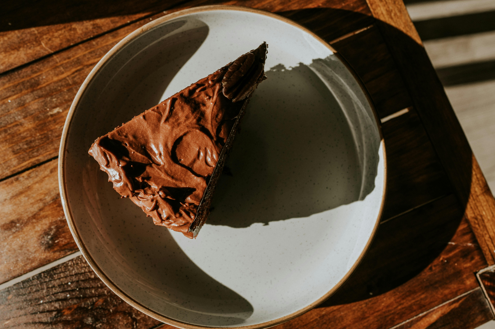

Banana Oatmeal Chocolate Chip Cookies

My go-to recipe for when I have bananas that have gone too ripe.
Chocolate Mousse Pie
Decadent chocolate pie made from simple ingredients.
Key Lime Pie

A favorite amongst friends—many iterations led to this refreshing key lime pie.